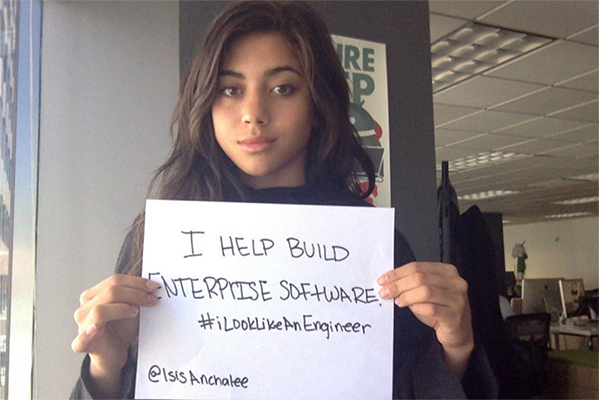
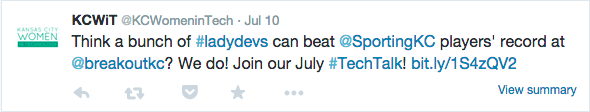
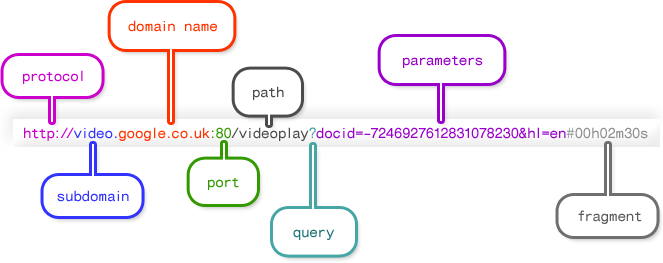

Intro to Web Concepts
Slides available at: http://kansascitywomenintechnology.github.io/IntroToWebConcepts
Based on Curriculum by
What we'll cover
- Terms & technologies
- Acronyms, the world wide web, languages/libraries/frameworks
- Building a web site
- Considerations, UX & IA, tools
- Current front-end development practices
- Single page applications, pre-processors, build tools
But First ...
3 Inspiring Female Developers
- Jennifer Dewalt @JenniferDewalt
- Isis Anchalee @isisAnchalee
- Lyndsey Scott @Lyndsey360
180 Websites
in 180 Days - Jennifer Dewalt

#ilooklikeanengineer
Twitter campaign by Isis Anchalee
Model/App Developer
Lyndsey Scott
Our Example App
Imagine Twitter
- Create an account
- Follow others
- Post tweets
- Get a list of tweets
- Search tweets by hashtag
Terms & Technologies
General Terms
IDE: Integrated Development Environment - Software meant to support the entire development process, often including compilation for a server-side language.
CMS: Content Management System - A program that allows publishing, editing, and modifying content as well as maintenance from a central interface.
Open source: A program in which the source code is available to the general public for use and/or modification from its original design.
Version Control: is a system that records changes to a file or set of files over time so that you can recall specific versions later.
Architecture: an approach to the design and planning of websites that involves technical, aesthetic and functional criteria. Ex. MVC
Library: a collection of resources used to help build software. Ex. Underscore
Framework: Already architected code that provides a structure for you to build in. Ex. Angular Framework
API: Application Programming Interface - An easy-to-use interface or set of tools made available to access a complex application
IP Address: Internet Protocol Address - A unique address for a computer or a server. Some IP Addresses are only unique to the network they are on while others are completely unique
URL: Uniform Resource Locator - a reference (an address) to a resource on the Internet.
DNS: Domain Name Service - A directory that associates domain names with host IPs to allow users to connect to web sites via URLs
SEO: Search Engine Optimization - The process of increasing your web site's perceived value to search engine algorithms, raising its rank in search results
Web 2.0: Buzzword generally describing a trend towards interactivity, rich media, and social engagement in web design
The Cloud: Services and technology that offer remote storage, processing, or other functionality by way of the internet
Front End Languages
HTML
Hyper Text Markup Language - The code structure used to convey the content of a web site
<p class="TweetTextSize TweetTextSize--16px js-tweet-text tweet-text" lang="en" data-aria-label-part="0">Think a bunch of <a href="/hashtag/ladydevs?src=hash" data-query-source="hashtag_click" class="twitter-hashtag pretty-link js-nav" dir="ltr"><s>#</s><b>ladydevs</b></a> can beat <a href="/SportingKC" class="twitter-atreply pretty-link js-nav" dir="ltr"><s>@</s><b>SportingKC</b></a> players' record at <a href="/BreakoutKC" class="twitter-atreply pretty-link js-nav" dir="ltr"><s>@</s><b>breakoutkc</b></a>? We do! Join our July <a href="/hashtag/TechTalk?src=hash" data-query-source="hashtag_click" class="twitter-hashtag pretty-link js-nav" dir="ltr"><s>#</s><b>TechTalk</b></a>! <a href="http://t.co/4ST2bAIMwu" rel="nofollow" dir="ltr" data-expanded-url="http://bit.ly/1S4zQV2" class="twitter-timeline-link" target="_blank" title="http://bit.ly/1S4zQV2"><span class="tco-ellipsis"></span><span class="invisible">http://</span><span class="js-display-url">bit.ly/1S4zQV2</span><span class="invisible"></span><span class="tco-ellipsis"><span class="invisible"> </span></span></a></p>
CSS
Cascading Style Sheets - A language used to describe the presentation of the content
.tweet { border-bottom: 1px solid #e1e8ed;
cursor: pointer;}
JavaScript
An object-oriented computer programming language commonly used to create interactive effects within web browsers.
console.log("why isn't my shit working?");
Front End Tools
Ruby
A dynamic, open source programming language with a focus on simplicity and productivity.
Ruby Gems
A package manager for the Ruby programming language that provides a standard format for distributing Ruby programs and libraries (in a self-contained format called a "gem"), a tool designed to easily manage the installation of gems, and a server for distributing them.
Node
An open source, cross-platform runtime environment for server-side and networking applications
npm
(Node Package Manager)
A package manager that makes it easy for JavaScript developers to share and reuse code, and it makes it easy to update the code that you're sharing. link
Bower
A package manager for Javascript libraries that allows you to define, version, and retrieve your dependencies. link
- Bootstrap - html, css, javascript framework that you can use as basis for creating web sites or web applications.
- FontAwesome - icon library
- Underscore - JavaScript library which provides utility functions for common programming tasks like mapping and filtering.
What is the world wide web?

Home and daily life of a web site
A typical web site will live or is "hosted" on a web server. Web servers are often large computers connected to a network.
- Type a web site address into the address bar
- DNS connects you to the hosting server
- The files are then sent back to your computer for display
- Sometimes code must be compiled before being sent back to you.
Deployment
How we get our code to servers for people to see.
Typically across 3 environments:
- Development (localhost)
- Staging
- Production (live for users)
This is where branching and version control come in handy.
Hosting
How do other people see my website?
Devops
A software development method that stresses communication, collaboration, integration, automation, and measurement of cooperation between software developers and other information-technology (IT) professionals.
tl;dr - Releasing software in an efficient way. It's harder than it sounds.
Anatomy of a URL
Clients vs. Servers
Clients make requests, servers fulfill them (usually).
For our web discussions, client = browser, but search engine crawlers, command line interfaces, and other applications can also behave as clients.
While any type of computer can be used as a server, they are generally larger and more powerful than others.
Browsers

Parsing languages & media
Client-side:
- HTML
- CSS
- JavaScript
- Flash (with plugin)
- Images
Sever-side:
- PHP
- Perl
- Python
- Ruby
- JavaScript
- .Net
- Java
- ColdFusion
- Databases
Not languages
- Libraries are collections of programming shortcuts for a language
- jQuery, Prototype, & Mootools
- Frameworks may include libraries, software, and more. Basically, a collection of assets/tools that helps you work in a particular language, usually from scratch
- Rails, Cake
- A specification is a set of currently acceptable rules for a given language
- HTML5 expands on the HTML4 spec and deprecates some older HTML syntax
Not languages
- AJAX is none of these, but is a technique combining multiple languages to return results from the server without needing to refresh a page. It stands for Asynchronous JavaScript And XML.
Java != JavaScript
Java:
- Server-side
- Object-oriented
- Requires special parser (JVM)
- By Sun Microsystems
JavaScript:
- Primarily client-side
- Primarily written procedurally
- Parsed by any browser
- By Netscape
Web standards
In general, this means a site should:
- Have valid HTML, CSS, and JavaScript
- Meet accessibility standards
- Meet semantic guidelines
- Have valid meta data
- Have proper character encoding
Considerations before building
- What is the purpose of the site?
- Hosting and a domain name
- Domain name registration should not cost more than $15/yr
- Hosting should not cost more than $50/yr
- Hosting choices may depend on supported server-side tech
- Whether to build it yourself or hire someone
User Experience & Information Architecture
A user-friendly, well-architected site will:
- Deepen engagement
- Increase conversion
- Raise satisfaction
- Bring users back
Sitemaps & decision trees


Server-side languages: What are the differences?
- The main difference is syntax
- the set of rules that define the combinations of symbols that are considered to be correctly structured programs in that language
- They have slightly different strengths and philosophies
- Which you choose to use will depend on
- What you are familiar with or want to learn
- What your host supports
- Community and documentation
Hello world
PHP
echo "Hello, world!";
Java
class HelloWorld {
static public void main( String args[] ) {
System.out.println( "Hello World!" );
}
}
Hello world
Python
'Hello, world!'
Ruby
puts 'Hello, world!'
Hello world
JavaScript
Not server-side, but just for example
document.writeln('Hello, World!');
Tools of the trade
To build your web site, you will probably need:
- A simple text editor or code editor such as SublimeText, Notepad, or TextWrangler to write your code. Many can be found for free.
- A web browser such as Chrome, Firefox, or Safari to test your code. All popular modern browsers are free.
Tools of the trade
You will also need:
- An FTP (file transfer protocol) client such as WinSCP, Cyberduck, or CoffeeCup FTP to get files from your computer to the server. Many are free.
- Optionally, an image editor such as IrfanView, Gimp, or Photoshop to edit images which will be used on the web site. Some are available for free.